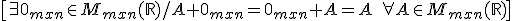

1.SUMA Y RESTA

La matriz cero es:
La matriz opuesta es
\[-A=(-{{a}_{ij}})\in {{M}_{mxn}}(\mathbb{R})\text{ si }A\in {{M}_{mxn}}\left( \mathbb{R} \right)\]
Entonces

\[A-B=A+(-B)=({{a}_{ij}}-{{b}_{ij}})\in {{M}_{mxn}}(\mathbb{R})\text{ si }A,B\in {{M}_{mxn}}\left( \mathbb{R} \right)\]
Propiedades:
(i) Propiedad conmutativa:
(ii) Propiedad asociativa:
(iii) Elemento neutro:

(iv) Elemento opuesto:
2. MULTIPLICACIÓN POR UN ESCALAR
La multiplicación por un escalar de un número real k por una matriz A se define:

Propiedades:
\[\begin{align} & \text{Si }A,B\in {{M}_{mxn}}(\mathbb{R}),k,l\in \mathbb{R} \\ & (1)\ k(A+B)=kA+kB \\ & (2)\ (k+l)A=kA+lA \\ & (3)\ (k\cdot l)A=k(lA) \\ & (4)\ 1\cdot A=A\quad \quad 0\cdot A={{0}_{mxn}} \\ \end{align}\]
Con estas propiedades (Mmxn(R), +,·R) tiene estructura de espacio vectorial.
Ejemplos:

3. PRODUCTO DE MATRICES
Ejemplo:
Entonces, definimos el producto de matrices

Ejemplo:
Propiedades:
\[I)\ \text{Propiedad asociativa: }A\cdot (B\cdot C)=(A\cdot B)\cdot C\quad \forall A,B,C\]
\[II)\ \text{Propiedad distributiva:}\left\{ \begin{align} & A\cdot (B+C)=A\cdot B+A\cdot C \\ & (B+C)\cdot A=B\cdot A+C\cdot A \\ \end{align} \right.\quad \forall A,B,C\]
NOTAS:
Ejemplo:
Entonces:
4. TRASPUESTA DE UNA MATRIZ

Ejemplo:
Propiedades:
Ejercicio. Sea:
Calcula:
a) 2A - 3B
b) A·B
c) B·A
d) Bt·At
Soluciones: